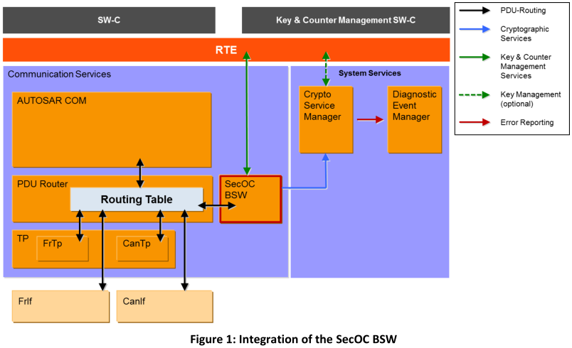

SecOC¶
概述¶
SecOC 模块旨在为 PDU 级别的关键数据提供资源高效且可行的身份验证机制。 身份验证机制应与当前的 AUTOSAR 通信系统无缝集成。对资源消耗的影响应尽可能小，以便允许作为遗留系统的附加保护。 该规范基于以下假设：主要使用消息身份验证代码 (MAC) 的对称身份验证方法。 它们使用比非对称方法小得多的密钥实现了相同级别的安全性，并且可以在软件和硬件中紧凑高效地实施。 但是，该规范提供了必要的抽象级别，以便可以使用对称方法和非对称身份验证方法。
SecOC模块集成在AUTOSAR PduR级别上。图1显示了作为Autosar通信堆栈一部分的SecOC模块的集成。

在此设置中，PduR 负责将传入和传出的安全相关 IPDU 路由到 SecOC 模块。 然后，SecOC 模块应添加或处理安全相关信息，并将结果以 I-PDU 的形式传播回 PduR。 PduR 然后负责进一步路由 I-PDU。此外，SecOC 模块利用 CSM 提供的加密服务并与 Rte 交互以允许密钥和计数器管理。 SecOC 模块应支持 PduR 支持的所有类型的通信范例和原则，尤其是多播通信、传输协议和 PduR 网关。 以下部分提供了 SecOC 接口、功能和配置的详细规范。
特殊名称¶
| 术语 | 描述 |
|---|---|
| CSM | AUTOSAR加密服务管理器(The AUTOSAR Crypto Service Manager) |
| SecOC | 安全车载通信(Secure Onboard Communication) |
| MAC | 消息验证代码(Message Authentication Code) |
| FV | 新鲜度值(Freshness Value) |
| FM | 新鲜度管理(Freshness Manager) |
| Authentic I-PDU | 真实 I-PDU 是任意 AUTOSAR I-PDU，其内容在网络传输期间通过安全 I-PDU 得到保护。 安全内容包括完整的 I-PDU 或 I-PDU 的一部分。 |
| Authentication | 身份验证是一种与身份相关的服务。该功能适用于实体和信息本身。进行沟通的双方应相互确认。通过通道传递的信息应根据来源、来源日期、数据内容、发送时间等进行认证。出于这些原因，密码学的这一方面通常分为两大类：实体认证和数据来源认证。数据源身份验证隐式地提供数据完整性（因为如果消息被修改，则源已更改）。 |
| Authentication Information | 认证信息由新鲜度值（或其一部分）和认证者（或其部分）组成。认证信息是SecOC为实现安全I-PDU而添加的附加信息 |
| Authenticator | Authenticator是用于提供消息身份验证的数据。通常，术语消息认证码（MAC）用于对称方法，而术语签名或数字签名指具有不同财产和约束的非对称方法。 |
| Data integrity | 数据完整性是指自数据由授权来源创建、传输或存储以来，数据未以未经授权的方式进行更改的属性。为了确保数据的完整性，应该有能力检测未经授权方的数据操作。数据操作包括插入、删除和替换等操作 |
| Data origin authentication | 数据源身份验证是一种身份验证类型，其中一方被确认为过去某个时间（通常未指定）创建的指定数据的（原始）来源。根据定义，数据源身份验证包括数据完整性。 |
| Distinction unilateral/ bilateral authentication | 在单方认证中，一方证明身份。 请求方甚至没有通过证明允许请求身份验证的程度的身份验证。 在双边认证中，请求者至少也被认证（见下文）以证明请求的特权。 基于上述双边身份验证，有一种有效且更安全的方法可以对两个端点进行身份验证。 除了接收方（在第一条消息中）最初请求的身份验证（在第二条消息中），发送方还请求身份验证。 接收方发送第三条消息，提供发送方请求的身份验证。 这只是三个消息（与四个和两个单方面消息形成对比）。 |
| Entity authentication | 实体认证是一个过程，通过该过程，一方（通过获取确凿证据）确信协议中涉及的第二方的身份，并且第二方实际参与了（即，在获取证据时或之前）。 |
| Message authentication | 消息认证是一个与数据源认证类似的术语。它提供关于原始消息源的数据源身份验证（和数据完整性，但没有唯一性和及时性保证）。 |
| Secured I-PDU | 安全I-PDU是AUTOSAR I-PDU，其包含由附加认证信息补充的真实I-PDU的有效载荷。 |
| Transaction authentication | 事务认证表示消息认证得到增强，以额外提供数据的唯一性和及时性保证（从而防止无法检测的消息重放）。 |
限制¶
适用于汽车领域¶
SecOC模块用于需要安全通信的所有ECU。
SecOC模块未指定用于MOST和LIN通信网络。由于未特别支持MOST，因此多媒体和远程信息处理汽车领域的适用性可能受到限制。
SomeIpTp constraints¶
SecOC模块只能用于保护整个SomeIpTp消息，不能用于保护SomeIpTp消息的各个段。
允许在传输侧执行以下模块顺序：
SecOC -> PduR -> SomeIpTp
不允许在变速器侧执行以下模块顺序：
SomeIpTp -> PduR -> SecOC
SecOC无法用于保护SomeIpTp单个消息段的主要原因如下：
-
SomeIpTp 需要调用 SomeIpTp_TriggerTransmit 来创建 SomIpTp 标头。
SecOC不支持上层通过TriggerTransmit提供数据。
依赖其他模块¶
对PduR的依赖性¶
SecOC模块取决于PduR的API和功能。它提供PDU路由器所需的上层和下层API功能，即
- 通信接口模块的API，
- 传输协议模块的API，
- 使用传输协议模块的上层模块的API，
- 处理来自通信接口模块的I-PDU的上层模块的API。
为了向PduR提供安全处理的结果，SecOC模块需要PduR的相应API功能。
对CSM的依赖性¶
SecOC 模块依赖于 CSM 模块在 AUTOSAR 中提供的密码算法。 SecOC 模块需要 API 函数来生成和验证加密签名或消息验证码，即
- MAC生成接口（Csm_MacGenerate），
- MAC验证接口（Csm_MacVerify），
- 签名生成接口（Csm_SignatureGenerate），
- 签名验证接口（Csm_SignatureVerify），
RTE的依赖性¶
SecOC 模块提供了一个具有管理功能的API。 此 API 包含以下由 RTE 作为服务接口提供的 API 函数。
- SecOC_VerificationStatus
- SecOC_VerifyStatusOverride.
- SecOC_VerificationStatusIndication
Rte 包括 BSW-Scheduler。 SecOC 模块依赖于 BSWscheduler 在 SecOCMainFunctionPeriodRx 和 SecOCMainFunctionPeriodTx 中配置的周期内调用函数 SecOC_MainFunctionRx 和 SecOC_MainFunctionTx。